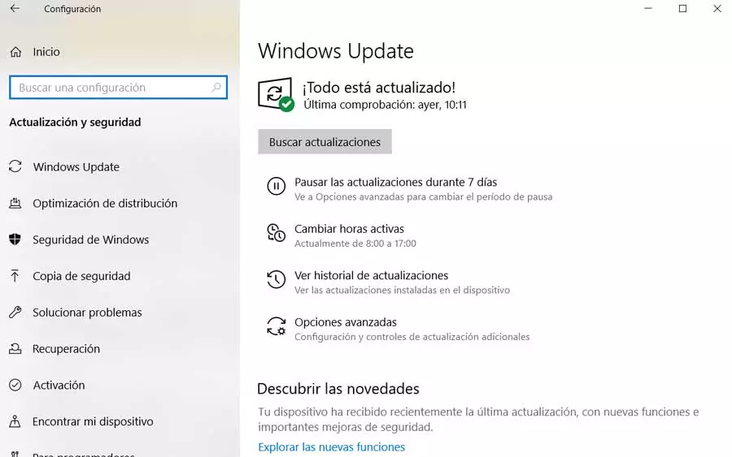

Actualizar windows
Los motivos por los que pueden dejar de funcionar un teclado o un ratón pueden ser muy distintos. Por ejemplo, puede haber ocurrido un fallo en Windows (ya sea de driver, de actualización, etc), e incluso un fallo de hardware, ya sea que el puerto USB de nuestro PC ha dejado de funcionar, o es el periférico el que se ha roto.
Reiniciar el ordenador es una práctica que soluciona muchos más problemas de los que pensamos. Recordamos que Windows 10 cuenta con un sistema de inicio rápido que permite encender el ordenador en segundos después de haberlo apagado. Por ello, no es lo mismo apagar y encender el ordenador que reiniciarlo con la función de «reiniciar» correspondiente.
Otro de los consejo para identificar y solucionar problemas en los perifericos es instalar las últimas versiones de todo. Empezando por Windows.
Puede que un parche, o una actualización acumulativa, haya introducido fallos en nuestro sistema, fallos que seguramente Microsoft ya haya identificado y los haya solucionado. Por ello, se recomienda comprobar Windows Update para asegurarnos de que las últimas actualizaciones están instaladas en el sistema. Y también que estamos usando la última versión del sistema operativo.
Si no hay versiones nuevas de Windows, y el problema ha aparecido de repente, después de actualizar el PC, entonces debemos hacer uso de los puntos de restauración del equipo para que, al volver a un estado anterior, todo vuelva a funcionar con normalidad.